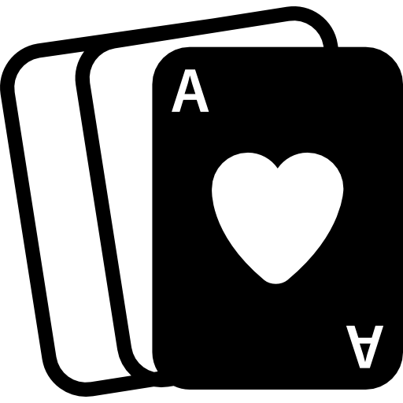

<!-- <!DOCTYPE html>
<html lang="pt-br">

    <head>
        <meta charset="UTF-8">
        <meta name="viewport" content="width=device-width, initial-scale=1.0">
        <title>Sorte no Amor tem Azar no Jogo</title>
    </head>

    <body>
        <button onclick="testarSorte()">Ver Minha Sorte</button>
        <br>
        <div id="mensagemIMG"></div>
    </body>

</html>

<script>
    function testarSorte() {
        mensagemIMG.innerHTML = ``;

        var sorte = 0;
        for (var count = 1; count <= 21; count++) {
            sorte = parseInt(Math.random() * 21);

            if (sorte == 6) {
                mensagemIMG.innerHTML += ``;
                mensagemIMG.innerHTML += `Você tem mais sorte no amor`;
            } else {
                mensagemIMG.innerHTML += ``;
                mensagemIMG.innerHTML += `Você tem mais sorte no jogo`;
            }
        }
    }
</script>

<!-- 13. Existe um dito popular que diz que se você tem sorte no amor tem azar no jogo e vice-versa. Assim, crie um programa o qual:
a) Tenha um botão "Ver minha sorte".
b) Ao ser clicado, ele exibe 21 imagens, uma ao lado da outra. Essa imagens só podem ser ou de um coraçãozinho ou de uma carta de baralho (deixe todas na mesma altura para ficar mais bonito na tela)
A distribuição das imagens é aleatória. Ao final serão 21 imagens, entre corações e cartas, isso que importa
c) Abaixo de todas a imagens, devem aparacer uma dessas mensagens:
   "Você tem mais sorte no amor" caso tenham sido sorteados mais corações
   "Você tem mais sorte no jogo" caso tenham sido sorteados mais cartas de baralho --> -->